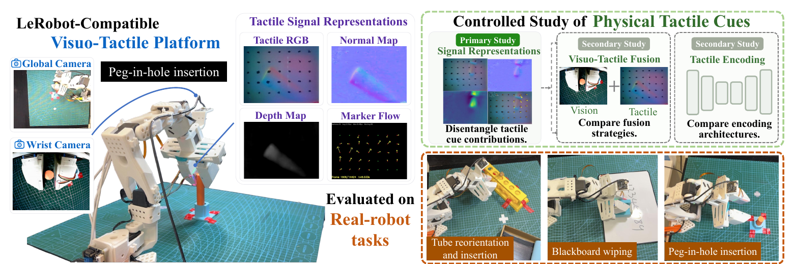
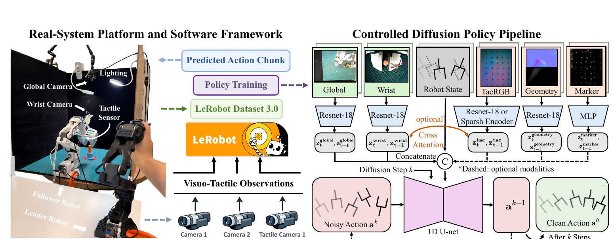
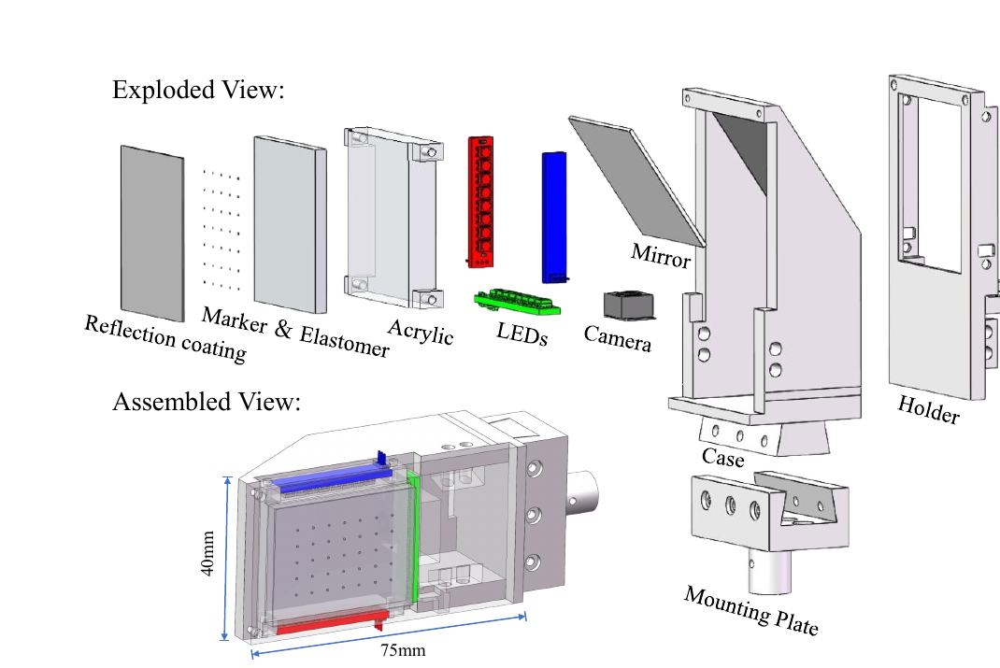
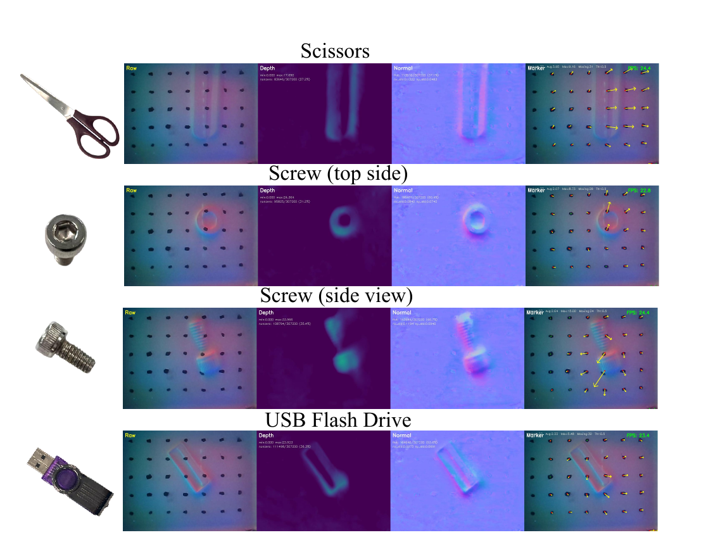
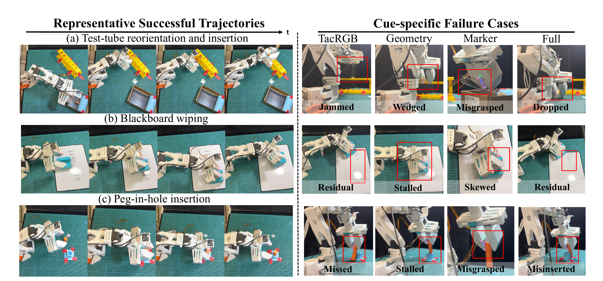

LeRobot-compatible platform
A unified hardware and data pipeline synchronizes global vision, wrist vision, robot state, actions, and tactile observations.
Vision-based tactile sensors capture multiple aspects of physical interaction within a single image stream, including contact appearance, geometry, indentation depth, and tangential deformation. However, existing visuo-tactile policies often directly process tactile observations as images, making it difficult to determine which physical cues contribute to policy learning. This paper presents a controlled real-robot study that compares physically interpretable tactile signals using the LeRobot platform, enhanced with our visuo-tactile perception system. From the same tactile stream, we derive tactile RGB images, normal/depth maps, and marker-flow fields, representing contact appearance, geometry, and tangential deformation, respectively. Using identical task demonstrations and the same policy backbone, we evaluate the individual and combined contributions of these tactile cues. We further compare tactile encoders and visuo-tactile fusion strategies. Evaluation across 720 real-robot trials yields four key findings: (1) tactile perception substantially improves the overall success rate from 57.8% to 78.9%, although its contribution varies across task stages; (2) marker flow is the most effective individual cue, achieving a success rate of 74.4% and playing a particularly important role in force regulation; (3) cue-factorized encoding consistently outperforms direct tactile-RGB encoding, highlighting that different physical cues require tailored processing techniques; and (4) cross-attention consistently improves performance across both encoders and all three tasks, offering a lightweight solution with performance comparable to that of pretrained tactile encoders.
A two-minute overview of the LeRobot-compatible platform, tactile cue representations, controlled policy study, and real-robot evaluation.

A unified hardware and data pipeline synchronizes global vision, wrist vision, robot state, actions, and tactile observations.
The same demonstrations and policy backbone isolate the contributions of appearance, geometry, and tangential deformation.
Three tasks cover in-gripper adjustment, sustained surface contact, and tight-clearance insertion.
A shared Diffusion Policy pipeline keeps observations, action space, policy backbone, horizons, training data, and training budget fixed across the controlled studies.

Raw tactile appearance preserves local contact patterns and color changes induced by elastomer deformation.
Surface normals and reconstructed depth describe contact geometry and local indentation.
Tracked marker displacement exposes tangential deformation and established-contact regulation.


Adjust the pose of a tube inside the gripper and insert it into a holder while local contact changes remain partially hidden from external cameras.
Maintain stable surface contact while moving tangentially across the target region, making pressure regulation and shear-related cues important.
Align and insert a peg under tight clearance, where small contact errors can cause jamming or failure.
In-gripper pose adjustment followed by insertion.
Sustained contact with tangential motion.
Tight-clearance alignment and insertion.

Representative failures reveal how each tactile representation supports different stages of contact-rich manipulation. Videos load only when played.
Experiment 1 · 450 real-robot trials. Five input configurations are evaluated on three tasks with 30 trials per configuration and task. Full tactile raises aggregate success from 57.8% to 78.9%, while marker flow is the strongest individual cue overall at 74.4%.
| Input representation | Tube reorientation | Blackboard wiping | Peg insertion |
|---|---|---|---|
| Vision only | 14/30 (46.7%) | 18/30 (60.0%) | 20/30 (66.7%) |
| Vision + tactile RGB | 22/30 (73.3%) | 24/30 (80.0%) | 20/30 (66.7%) |
| Vision + normal/depth | 20/30 (66.7%) | 19/30 (63.3%) | 21/30 (70.0%) |
| Vision + marker flow | 22/30 (73.3%) | 23/30 (76.7%) | 22/30 (73.3%) |
| Vision + full tactile | 23/30 (76.7%) | 25/30 (83.3%) | 23/30 (76.7%) |
Experiment 2 · 270 additional real-robot trials. Three new encoder/fusion configurations are evaluated on three tasks with 30 trials per configuration and task. The ResNet · Concatenation row is the shared full-tactile baseline from Experiment 1 and is repeated below for comparison, so it is not counted again in the 720-trial total. With full tactile fixed, cross-attention improves aggregate success by 4.4-6.7 percentage points.
| Encoder / fusion | Tube reorientation | Blackboard wiping | Peg insertion |
|---|---|---|---|
| ResNet · Concatenation | 23/30 (76.7%) | 25/30 (83.3%) | 23/30 (76.7%) |
| ResNet · Cross-attention | 24/30 (80.0%) | 27/30 (90.0%) | 26/30 (86.7%) |
| Sparsh-DINO · Concatenation | 26/30 (86.7%) | 25/30 (83.3%) | 24/30 (80.0%) |
| Sparsh-DINO · Cross-attention | 27/30 (90.0%) | 27/30 (90.0%) | 25/30 (83.3%) |
This work presents a controlled real-robot comparison of physically interpretable tactile cues for contact-rich imitation learning. By deriving tactile RGB, normal/depth geometry, and marker-flow fields from the same sensor stream and evaluating them with matched demonstrations and policy settings, the study separates the contribution of physical cues from the effects of tactile encoding and visuo-tactile fusion.
Across 720 real-robot trials, full tactile perception achieves 71/90 successes (78.9%), compared with 52/90 (57.8%) for vision only, an aggregate improvement of 21.1 percentage points. The benefit is nevertheless task- and stage-dependent.
Marker flow reaches 67/90 successes (74.4%) and is particularly informative for regulating force after contact has been established. The qualitative failures also show that different cues support different stages of contact establishment and regulation.
Full tactile exceeds marker flow by only 4.4 percentage points overall and by one successful trial in each task. Its primary benefit is smoother, more continuous transitions between contact establishment, regulation, and task completion.
Instead of processing the tactile observation as a single RGB image, cue-factorized encoding separately processes tactile appearance, normal/depth geometry, and marker flow. This tailored treatment of different physical cues achieves better performance than direct tactile-RGB encoding.
With the full-tactile input fixed, cross-attention consistently improves success across all three tasks for both encoders, raising aggregate success by 6.7 points with ResNet-18 and 4.4 points with Sparsh-DINO. Its gains are stable and its performance is comparable to tactile-pretrained encoding; encoder choice, by contrast, has task-dependent effects.
Limitations and future work. The present study is limited to one vision-based tactile sensor and a parallel-jaw gripper platform. Future work will examine whether these cue-dependent findings generalize across tactile sensor designs, robot embodiments, and broader contact regimes.
@misc{qin2026physical,
title = {Which Physical Tactile Cues Matter for Contact-Rich Imitation Learning? A Controlled Real-Robot Study},
author = {Qin, Xuhao and Huang, Xiyan and Dong, Haoyu and Zhang, Xi and Xiao, Chenxi},
year = {2026},
howpublished = {Project website},
url = {https://xuhaoqin02.github.io/lerobot-tactile/}
}This preliminary citation can be updated with the final venue, DOI, or arXiv identifier when available.